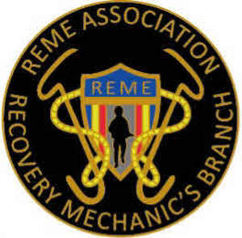

Trade Mark Journal No.2025/051 19 December 2025
UK00004280161 18 October 2025 (14,16,20,21,24,25,26)

- Class 14
- Lapel pins ; Tie tacks; Tie pins; Pins (Tie -); Tie bars; Cuff links and tie clips; Cufflinks; Cuff-links; Silver-plated earrings; Gold-plated earrings; Earrings; Silver-plated necklaces; Gold plated brooches [jewellery]; Silver-plated bracelets; Gold-plated necklaces; Brooches [jewelry]; Jewelry brooches; Brooches being jewelry; Silver earrings; Gold plated earrings; Gold earrings; Brooches [jewellery]; Jewellery brooches; Lapel pins [jewellery]; Pendants [jewellery]; Pewter jewellery; Pendants [jewelry]; Scarf clips being jewelry; Lapel pins [jewelry]; Jewelry stickpins; Pendant watches; Wristlets [jewellery]; Brooches [jewellery, jewelry (Am.)]; Jewellery hat pins; Charms [jewellery]; Charms for jewellery; Jewellery charms; Hat jewellery; Charms [jewelry]; Charms for jewelry; Lapel pins of precious metals [jewellery]; Sterling silver jewellery; Watches made of plated gold; Jewelry hat pins; Timepieces; Wristwatches; Lockets [jewellery, jewelry (Am.)]; Pendants; Bangle bracelets; Bracelet charms; Keyrings; Bracelets [jewellery, jewelry (Am.)]; Ornaments [jewellery]; Hat jewelry; Pins [jewellery]; Pins being jewellery; Silver watches; Pins being jewelry; Pins [jewelry]; Jewelry pins for use on hats; Pins [jewellery, jewelry (Am.)]; Jewellery; Ornaments [jewellery, jewelry (Am.)]; Watchbands; Cuff links made of silver plate; Cuff links made of gold; Chronographs for use as timepieces; Wall decorations of precious metal; Lapel pins; Ornamental lapel pins; Lapel badges of precious metal; Key rings [split rings with trinket or decorative fob]; Watches bearing insignia; Commemorative shields; Watches; Chronographs for use as watches; Chronographs as watches; Chronographs [watches]; Clocks and watches; Watches and clocks; Dials for watches; Wrist watches; Quartz watches; Straps for watches; Sports watches; Faces for watches; Pocket watches; Housings for clocks and watches; Mechanical watches.
- Class 16
- Mats of paper for drinking glasses; Mats of paper for beer glasses; Paper mats for beer glasses; Engraving plates; Printed emblems; Paper name badges; Paper badges; Cardboard badges; Decorative stickers for helmets; Paper emblems; Name badge holders [office requisites]; Printed emblems [decalcomanias]; Clips for name badge holders [office requisites]; Name badges [office requisites]; Embroidery design patterns; Patterns for embroidery; Flags of paper; Paper flags; Flags made from paper; Display banners of paper; Paper banners; Banners of paper; Display banners made of cardboard; Decorative stickers for cars; Printed paper signs featuring names for use for special events; Printed paper signs featuring table numbers for use for special events; Placards of paper; Placards of cardboard; Pens; Ballpoint pens; Ball-point pens; Felt-tip pens; Ink pens; Steel pens [styluses or stencil pens]; Rollerball pens; Fountain pens; Coloured pens; Colouring pens; Drawing pens; Marking pens; Pens for marking; Pencils; Pen sets; Pencils with erasers; Pen cases; Notepads; Pencil erasers.
- Class 20
- Plaques of plastic; Plaques made of wood; Plaques made of plastics; Plaques (decorative wall -) [furniture] not of textile; Wood statues.
- Class 21
- Pewter tankards; Drinking cups; Drinking goblets; Tumblers for use as drinking glasses; Beer mugs; Drinking mugs made of porcelain; Drinking steins; Drinking glasses; Drinking bottles; Coffee mugs; Mugs; Drinking flasks; Tumblers [drinking vessels]; Cups and mugs; Pilsner drinking glasses; Glasses, drinking vessels and barware; Glasses [drinking vessels]; Glass mugs; Drinking bottles for sports; Drinking glass holders; Earthenware mugs; Porcelain mugs; Mugs of porcelain; Drinking flasks for travellers; Drinking flasks [for travellers]; Flasks for travellers (Drinking -); Pet drinking bowls; Drinking vessels; Ceramic mugs; Beer glasses; Coffee cups; Drinking receptacles; China mugs; Mugs of china; Beer jugs; Drinking cups [not of precious metal]; Insulated mugs; Travel mugs; Tea cups; Pint tankards; Pint glasses; Horns (Drinking -); Drinking horns; Glass cups; Pet feeding and drinking bowls; Tankards; Coffee pots; Beverage glassware; Mug cosies; Mugs made of earthenware; Whisky glasses; Vacuum mugs; Mugs made of porcelain; Beer steins; Drinks containers; Glass carafes; Wine jugs; Schnapps glasses; Ceramic mugs; Water bottles; Goblets; Drinkware; Mugs made of china; Wine glasses; Statues of glass; Statues of terracotta; Statuettes of porcelain; Statues of china.
- Class 24
- Drink coasters of table linen; Mats of textile for beer glasses; Pennants [flags], other than of paper; Cloth flags; Embroidery fabric; Iron-on cloth labels; Bunting flags; Plastic flags; Fabric flags; Nylon flags; Flags and pennants of textile; Flags of textile; Flags, not of paper; Flags of textile or plastic; Banners; Textile flags used for place settings; Cloth banners; Plastic banners; Banners of textile; Banners textile; Banners of textile or plastic; Bunting; Cloth pennants; Plastic pennants; Plastic bunting; Cloth bunting; Pennants of textile; Towels of textile featuring American football team logos.
- Class 25
- Bow ties; Ties; Neckwear; Neckties; Bowties; Leather waistcoats; Waistcoats; Ascots (ties); Cravats; Embroidered clothing; Woven shirts; Sleeveless jerseys; Printed t-shirts; Quilted vests; Short-sleeved T-shirts; Shirt yokes; Yokes (Shirt -); Dress shirts; Camouflage shirts; Long-sleeved shirts; Short-sleeved shirts; Beanie hats; Leather headwear; Bandanas [neckerchiefs]; Quilted jackets [clothing]; Pocket kerchiefs; Jackets; Jackets [clothing]; Windproof jackets; Blouson jackets; Fleece jackets; Sleeved jackets; Denim jackets; Rainproof jackets; Leather jackets; Wind-resistant jackets; Waterproof jackets; Sleeveless jackets; Sheepskin jackets; Suede jackets; Men's and women's jackets, coats, trousers, vests; Bomber jackets; Weatherproof jackets; Motorcycle jackets; Fur jackets; Padded jackets; Camouflage jackets; Snowboard jackets; Ski jackets; Rain jackets; Fur coats and jackets; Reversible jackets; Fishing jackets; Shell jackets; Hunting jackets; Sweat jackets; Heavy jackets; Knit jackets; Down jackets; Sports jackets; Jackets being sports clothing; Warm-up jackets; Wind jackets; Jackets (Stuff -) [clothing]; Stuff jackets [clothing]; Riding jackets; Casual jackets; Stuff jackets; Safari jackets; Bed jackets; Dinner jackets; Fishermen's jackets; Light-reflecting jackets; Smoking jackets; Track jackets; Long jackets; Donkey jackets; Polar fleece jackets; Waistcoats [vests]; Parkas; Anoraks [parkas]; Overcoats; Wind resistant jackets; Vests; Fleece vests; Gilets; Wind-resistant vests; Corduroy shirts; Windproof clothing; Outerwear; Blazers; Sweatshirts; Raincoats; Hoods [clothing]; Coats of denim; Denim coats; Capes (clothing); Camouflage vests; Shorts [clothing]; Shirts for suits; Jerseys [clothing]; Sweaters; Waterproof trousers; Corduroy trousers; Leather coats; Chaps (clothing); Jumpsuits; Duffle coats; Kerchiefs [clothing]; Overshirts; Hooded sweatshirts; Down vests; Jumpers [sweaters]; Korean outer jackets worn over basic garment [Magoja]; Bottoms [clothing]; Duffel coats; Wind vests; Rainproof clothing; Turtleneck shirts; Hoodies; Fishing vests; Clothing; Knitwear [clothing]; Ready-to-wear clothing; Woolen clothing; Linen clothing; Headbands [clothing]; Headbands for clothing; Clothes; Aprons [clothing]; Maternity clothing; Denims [clothing]; Cashmere clothing; Leather clothing; Clothing of leather; Leather (Clothing of -); Silk clothing; Parts of clothing, footwear and headgear; Knitted clothing; Veils [clothing]; Wristbands [clothing]; Waterproof clothing; Casual clothing; Playsuits [clothing]; Clothing for leisure wear; Ready-made clothing; Latex clothing; Woven clothing; Infant clothing; Leisure clothing; Clothing for sports; Sports clothing; Ties [clothing]; Athletic clothing; Clothing for children; Clothing for babies; Tops [clothing]; Clothing for infants; Clothing for cycling; Weatherproof clothing; Triathlon clothing; Water-resistant clothing; Clothing for skiing; Thermal clothing; Cowls [clothing]; Men's clothing; Fishing clothing; Shirts; Sweat shirts; Short-sleeve shirts; Polo shirts; T-shirts; Pique shirts; Open-necked shirts; Collared shirts; Sleep shirts; Football shirts; Golf shirts; Soccer shirts; Maternity shirts; Rugby shirts; Aloha shirts; Yoga shirts; Tee-shirts; Ramie shirts; Shirts and slips; Tennis shirts; Mock turtleneck shirts; Night shirts; Hooded sweat shirts; Sports shirts; Sport shirts; Button-front aloha shirts; Casual shirts; Fishing shirts; Under shirts; Hunting shirts; Sports shirts with short sleeves; Button down shirts; Moisture-wicking sports shirts; Undershirts; American football shirts; Polo sweaters; Tank-tops; Padded shirts for athletic use; Shirt fronts; V-neck sweaters; Collars [clothing]; Jerseys; Blouses; Polo knit tops; Turtleneck sweaters; Paper hats for use as clothing items; Golf clothing, other than gloves; Bandanas; Paper hats [clothing]; Hats (Paper -) [clothing]; Nightshirts; Mock turtleneck sweaters; Long sleeved vests; Undershirts for kimonos (koshimaki); Undershirts for kimonos [koshimaki]; Party hats [clothing]; Roll necks [clothing]; Bandannas; Polo neck jumpers; Scarves; Cashmere scarves; Scarfs; Neck scarves; Silk scarves; Snoods [scarves]; Shoulder scarves; Head scarves; Neck scarves [mufflers]; Mufflers [neck scarves]; Mufflers as neck scarves; Neck tube scarves; Neck scarfs [mufflers]; Shawls; Shawls and headscarves; Knit shirts; Shawls and stoles; Cardigans; Men's dress socks; Beanies; Bobble hats; Knit tops; Headbands; Jumpers; Shell suits.
- Class 26
- Hat pins, other than jewellery; Brooches [clothing accessories]; Charms [not jewellery or for keys, rings or chains]; Scarf clips not being jewelry; Pins, other than jewellery; Pins, other than jewelry; Pins, other than jewellery [jewelry (Am.)]; Brooches for clothing; Embroidered badges; Embroidered emblems; Embroidered patches; Embroidered patches for clothing; Button badges; Embroidery; Silver embroidery; Silver embroidery for garments; Gold embroidery for garments; Gold embroidery; Embroidery for garments; Ornamental cloth patches; Hat ornaments; Epaulettes; Ornamental adhesive patches for jackets; Badges for wear, not of precious metal; Cloth patches for clothing.
Christopher David Zeil